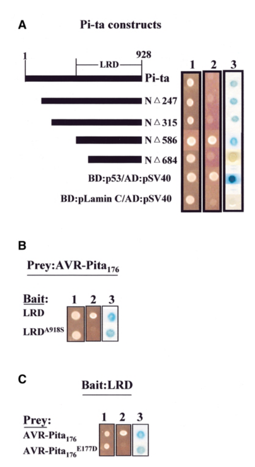

Pi-ta (LOC_Os12g18360) is a 928-residue coiled-coil, nucleotide-binding (NB-ARC), leucine-rich repeat (CC-NB-LRR, CNL) protein of rice, encoded near the centromere of chromosome 12 in a blast resistance cluster that also contains the unrelated armadillo-repeat resistance gene Ptr. It has an N-terminal Rx-type coiled coil, an NB-ARC domain with an intact P-loop, a winged-helix domain and a C-terminal LRR region. The NB-ARC domain is expected to bind ADP in the resting state, as in other plant NLRs, but this has not been measured. Pi-ta was cloned as the receptor for the Pyricularia (Magnaporthe) oryzae effector AVR-Pita: the AVR-Pita176 fragment was reported to bind the Pi-ta LRR region in yeast and in vitro, and resistant and susceptible alleles differ only at residue 918 (Ala in resistant alleles, Ser in susceptible pi-ta alleles). The sequence of this record (cultivar Tsuyake) carries Ser918 and is a susceptible allele. Later knockdown and knockout genetics showed that AVR-Pita recognition and the classical Pi-ta and Pi-ta2 resistance specificities are conferred by alleles of Ptr, and that the NLR is not needed for them. One study found that knocking out the Pi-ta allele of cultivar Fuhui 2663 abolished resistance to one blast isolate. The physiological function of the Pi-ta NLR, including any ligand, immune output or subcellular location, is therefore unresolved.
| GO Term | Evidence | Action | Reason |
|---|---|---|---|
|
GO:0002758
innate immune response-activating signaling pathway
|
IEA
GO_REF:0000117 |
MARK AS OVER ANNOTATED |
Summary: ARBA machine-learning transfer applied to plant CNL proteins. The only Pi-ta-specific support for immune signalling was the AVR-Pita recognition model (direct binding to the LRR region and transient co-expression), which locus-resolved genetics have since contradicted.
Reason: Many CNLs do activate immune signalling, so the term is not absurd for this protein family. For Pi-ta, however, Xiao et al. 2024 showed that AVR-Pita recognition relies on Ptr and that the NLR plays no part in it. No other immune pathway has been shown to signal through the Pi-ta NLR. The record is also a Ser918 susceptible allele. The term asserts more than the gene-specific evidence supports.
Supporting Evidence:
PMID:38834685
we found that AVR-Pita recognition relies solely on Ptr and that the NLR Pi-ta has no role in it, indicating that it is not the Pi-ta resistance gene.
file:ORYSJ/Pi-ta/Pi-ta-deep-research-falcon.md
Xiao and colleagues could not reproduce the reported AVR-Pita interaction with Pi-ta short/long constructs or their tested regions.
PMID:10921881
These data suggest that the AVR-Pita 176 protein binds directly to the Pi-ta LRD region inside the plant cell to initiate a Pi-ta -mediated defense response.
|
|
GO:0006952
defense response
|
IEA
GO_REF:0000002 |
KEEP AS NON CORE |
Summary: InterPro2GO mapping from the plant disease resistance protein family (IPR044974). Pi-ta has the full CC-NB-ARC-LRR architecture of this family.
Reason: The general defense response term is a fair family-level inference for an intact CNL. Gene-specific evidence is split: one CRISPR study links the Fuhui 2663 Pi-ta allele to blast resistance, while locus-resolved genetics show the NLR is not needed for AVR-Pita-dependent resistance. The term is kept at this general level but not treated as an established core function.
Supporting Evidence:
PMID:10921881
Pi-ta encodes a putative cytoplasmic receptor with a centrally localized nucleotide-binding site and leucine-rich domain (LRD) at the C-terminus.
PMID:36050368
Using CRISPR/Cas9 genome editing technology, we knocked out Pita-Fuhui2663 in Fuhui 2663 and found that the knockout mutants lost its resistance, indicating that Pita-Fuhui2663 confers blast resistance.
|
|
GO:0006952
defense response
|
IMP
PMID:11090207 tA single amino acid difference distinguishes resistant and ... |
KEEP AS NON CORE |
Summary: Bryan et al. 2000 cloned Pi-ta by map-based cloning. They reported that co-expressing a Pi-ta(+) allele with AVR-Pita in rice cells induced a resistance response, whereas the Ser918 pi-ta(-) allele did not. Gramene attached this IMP to both the resistant (Q9AY26) and susceptible (Q84UB1, Ser918) UniProt records.
Reason: The curator read the full text, which is not cached here. The paper's conclusion has since been directly contradicted: Xiao et al. 2024 used RNAi and CRISPR lines to show that Pi-ta resistance and AVR-Pita recognition depend on Ptr, a separate gene in the same cluster, and not on the NLR. Zhao et al. 2018 had already shown that Ptr is required for Pi-ta-type resistance. On the other side, He et al. 2022 found that two CRISPR knockout lines of the Fuhui 2663 Pi-ta allele became susceptible to isolate KJ201, which supports some defense role for the NLR in that background. With the evidence in conflict, the general defense response term is kept, deferring to the curator and to the 2022 knockout data, but it is not treated as a core function. It is not removed because necessity in Fuhui 2663 has not been refuted. Note also that this UniProt record is the Ser918 allele, which the original paper found unable to trigger the response.
Supporting Evidence:
PMID:11090207
Transient expression in rice cells of a Pi-ta(+) R gene together with AVR-Pita(+) induces a resistance response.
PMID:11090207
No resistance response is induced in transient assays that use a naturally occurring pi-ta(-) allele differing only by the serine at position 918.
PMID:38834685
Taken together, our work establishes that the M. oryzae effector AVR-Pita is detected in an allele-specific manner by the unconventional rice resistance protein Ptr and that the NLR Pi-ta has no function in Pi-ta resistance and the recognition of AVR-Pita.
PMID:36050368
Inoculation of rice blast fungus showed that the two knockout lines generated by CRISPR/Cas9 were susceptible to KJ201, while their parent Fuhui2663 was resistant to KJ201.
|
|
GO:0009626
plant-type hypersensitive response
|
IEA
GO_REF:0000117 |
MARK AS OVER ANNOTATED |
Summary: ARBA transfer of HR from characterised CNLs. The only Pi-ta-linked cell death data come from transient assays in Jia et al. 2000, interpreted under the AVR-Pita-Pi-ta recognition model.
Reason: Cell death has never been shown to be executed by the Pi-ta NLR itself. For example, no autoactive mutant or Pi-ta-dependent cell death assay in a Ptr-null background has been reported. The AVR-Pita-triggered response once attributed to Pi-ta is now attributed to Ptr. HR is plausible for the family but not established for this gene.
Supporting Evidence:
PMID:10921881
The absence of AVR-Pita 176 transcripts in Pi-ta -containing plant cells is consistent with the occurrence of HR-associated cell death in transformed cells.
PMID:38834685
we found that AVR-Pita recognition relies solely on Ptr and that the NLR Pi-ta has no role in it
|
|
GO:0042742
defense response to bacterium
|
IEA
GO_REF:0000117 |
REMOVE |
Summary: ARBA transfer of a bacterial defense term to a rice blast CNL. No bacterial infection, recognition or resistance data exist for Pi-ta.
Reason: All Pi-ta literature concerns the fungal blast pathogen. The term comes from over-propagation of bacterial-resistance annotations of other NB-LRR proteins (for example Arabidopsis RPS/RPM CNLs). There is no biological basis for it in this gene.
Supporting Evidence:
PMID:11090207
The rice blast resistance (R) gene Pi-ta mediates gene-for-gene resistance against strains of the fungus Magnaporthe grisea that express avirulent alleles of AVR-Pita.
|
|
GO:0043531
ADP binding
|
IEA
GO_REF:0000002 |
ACCEPT |
Summary: InterPro2GO mapping from the NB-ARC domain (IPR002182, residues 214-385). The Pi-ta sequence keeps the Walker A/P-loop (GSGGVGKTT), kinase-2 (FIIIEDLW) and GLPL (GGLPLAI) motifs that form the nucleotide pocket.
Reason: Plant NLR NB-ARC domains bind ADP in their resting state, and the motifs needed for nucleotide binding are intact in Pi-ta. This is the only molecular activity that can be inferred with reasonable confidence for Pi-ta. It is a structural inference; nucleotide binding has not been measured for Pi-ta itself.
Supporting Evidence:
PMID:10921881
Pi-ta encodes a putative cytoplasmic receptor with a centrally localized nucleotide-binding site and leucine-rich domain (LRD) at the C-terminus.
PMID:11090207
Pi-ta encodes a predicted 928-amino acid cytoplasmic receptor with a centrally localized nucleotide binding site.
|
Q: Xiao et al. 2024 attribute Pi-ta and Pi-ta2 resistance to Ptr alleles. Should the fungal-defense annotations historically attached to the Pi-ta NLR (and the AVR-Pita recognition model) be re-curated onto Ptr (LOC_Os12g18729), leaving the NLR without a process annotation until its own function is shown?
Q: Gramene attached the same IMP defense response annotation (PMID:11090207) to both the resistant Ala918 record (Q9AY26) and this susceptible Ser918 record (Q84UB1). The original paper showed that the Ser918 allele does not trigger resistance. Which UniProt record should carry gene-level annotations for the Pi-ta locus?
Q: How can the He et al. 2022 result (Pi-ta knockout in Fuhui 2663 abolishes resistance to isolate KJ201) be reconciled with the Xiao et al. 2024 finding that the NLR is dispensable? Is KJ201 resistance AVR-Pita dependent, and which Ptr allele does Fuhui 2663 carry?
Experiment: Complement the Fuhui 2663 Pi-ta knockout lines with the wild-type Pi-ta allele. Genotype their Ptr allele and test the AVR-Pita status of isolate KJ201. This would decide whether the Pi-ta NLR has an independent resistance role in that background.
Experiment: Express Pi-ta (Ala918 and Ser918) alone and with AVR-Pita, Ptr alleles or candidate effectors in Nicotiana benthamiana and Ptr-null rice protoplasts. Include P-loop (K243) and MHD-type mutants to test whether the NLR can trigger cell death on its own.
Experiment: Determine the subcellular localisation of tagged Pi-ta in rice cells and test co-immunoprecipitation with PTR, to see whether the NLR and PTR physically or functionally interact.
The research report should be a detailed narrative explaining the function, biological processes, and localization of the gene product. Citations should be given for all claims.
You should prioritize authoritative reviews and primary scientific literature when conducting research. You can supplement
this with annotations you find in gene/protein databases, but these can be outdated or inaccurate.
We are specifically interested in the primary function of the gene - for enzymes, what reaction is catalyzed, and what is the substrate specificity? For transporters, what is the substrate? For structural proteins or adapters, what is the broader structural role? For signaling molecules, what is the role in the pathway.
We are interested in where in or outside the cell the gene product carries out its function.
We are also interested in the signaling or biochemical pathways in which the gene functions. We are less interested in broad pleiotropic effects, except where these elucidate the precise role.
Include evidence where possible. We are interested in both experimental evidence as well as inference from structure, evolution, or bioinformatic analysis. Precise studies should be prioritized over high-throughput, where available.
The requested protein is Pi-ta from Oryza sativa subsp. japonica (ORYSJ), not the similarly named Pi-t receptor or the distinct rice protein PTR. The supplied UniProt record identifies Q84UB1 as Pi-ta and assigns NB-ARC and leucine-rich-repeat (LRR) features. Published work identifies the corresponding rice NLR gene as LOC_Os12g18360; PTR is LOC_Os12g18729, a neighboring gene encoding a different, armadillo-repeat-containing resistance protein. The literature establishes the rice gene identity and NLR architecture, although the retrieved studies do not independently verify the accession-to-sequence mapping or the subspecies of every experimental line. (xiao2024theunconventionalresistance pages 2-3, xiao2024theunconventionalresistance pages 1-2)
Recommended functional annotation: Pi-ta is an intracellular immune-receptor-like NB-ARC/LRR protein whose endogenous recognition specificity and precise contribution to blast resistance remain unresolved. Historically, it was annotated as the receptor that directly recognizes the blast-fungus effector AVR-Pita. A locus-resolved 2024 study instead found that the tested AVR-Pita-specific resistance requires PTR alleles, not Pi-ta. This distinction is essential: evidence for PTR-mediated recognition must not be assigned to Q84UB1. (xiao2024theunconventionalresistance pages 7-8, xiao2024theunconventionalresistance pages 2-3, xiao2024theunconventionalresistance pages 1-2)
The primary-study comparisons underlying that assessment are summarized here.
| Proposition | Primary data | Warranted interpretation / limits |
|---|---|---|
| Historical model: Pi-ta (Q84UB1; LOC_Os12g18360) directly recognizes AVR-Pita | Jia et al. (2000) mapped interaction with mature AVR-Pita176 to the C-terminal leucine-rich domain of Pi-ta using yeast two-hybrid assays; far-western analysis supported direct in-vitro binding. Mutations altered interaction specificity. DOI (liu2013recentprogressin pages 6-7, jia2000directinteractionof media ff5ce2d0, jia2000directinteractionof media bb645b18) | Supports physical association under yeast and in-vitro assay conditions, but not endogenous Pi-ta necessity during infection. Direct interaction in infected rice was not established, and Xiao et al. later failed to reproduce the yeast interaction. No Pi-ta cellular localization or ATPase activity was measured by these experiments. |
| Pi-ta can be required for isolate-specific resistance in Fuhui 2663 | He et al. (2022) mapped resistance to an approximately 80-kb chromosome-12 interval containing LOC_Os12g18360. Two CRISPR knockout lines of the Fuhui 2663 Pi-ta allele became susceptible to isolate KJ201; measured agronomic traits were not significantly altered. DOI (he2022analysisofapplications pages 6-9, he2022analysisofa pages 8-9) | Provides genotype- and isolate-specific loss-of-function evidence for Pi-ta or a Pi-ta-dependent mechanism. Because Pi-ta lies in a tightly linked resistance region containing Ptr, the result should be reconciled with later locus-resolved studies and independently replicated. It does not establish AVR-Pita as the relevant KJ201 determinant or prove direct recognition. |
| PTR is a distinct resistance protein and must not be annotated as Pi-ta | Zhao et al. (2018) identified Ptr as LOC_Os12g18729, an atypical ARM-repeat protein near Pi-ta. A 2-bp deletion and 34 independent CRISPR Ptr knockouts caused susceptibility; mutant M2354 was susceptible to more than 300 isolates. DOI (zhao2018thericeblast pages 8-9, zhao2018thericeblast pages 1-2) | Demonstrates a major resistance function for PTR, not for Q84UB1/LOC_Os12g18360. Earlier interpretation placed PTR downstream of or alongside Pi-ta; the 2024 evidence instead assigns AVR-Pita recognition directly to PTR alleles. |
| Cytoplasmic localization evidence applies to PTR, not Pi-ta | Zhao et al. (2018) reported that two PTR isoforms were mainly cytoplasmic using PTR:GFP-related experiments; altered PTR products showed differing cytoplasmic/nuclear distributions. DOI (zhao2018thericeblast pages 1-2, zhao2018thericeblast pages 9-10) | This result cannot be transferred to Pi-ta. A direct, experimentally established subcellular localization for Q84UB1/LOC_Os12g18360 was not identified in the assessed literature; “intracellular/cytoplasmic receptor” remains an architectural inference or historical description. |
| In IR64 and K1, Pi-ta is dispensable whereas the corresponding Ptr allele is required | Xiao et al. (2024) tested four independent nlr pi-ta and four ptr mutant lines in IR64: nlr pi-ta mutants retained resistance to AVR-PitaO-137, whereas ptr mutants became susceptible. In K1, Pi-ta RNAi or knockout did not remove resistance, but PtrB disruption did. DOI (xiao2024theunconventionalresistance pages 2-3, xiao2024theunconventionalresistance pages 7-8, xiao2024theunconventionalresistance pages 3-5) | Strong locus-resolved evidence that LOC_Os12g18360 is neither necessary nor sufficient for the tested historical Pi-ta/Pi-ta2 phenotypes. It assigns those phenotypes to PtrB and PtrA, respectively, but does not show that Pi-ta lacks every immune or physiological function. |
| PtrA is sufficient for AVR-Pita-dependent resistance without Pi-ta | Xiao et al. (2024) introduced PtrA into Nipponbare, which lacks functional Pi-ta/Pi-ta2 resistance; four independent transgenic lines became resistant specifically to an AVR-PitaO-137-expressing strain. DOI (xiao2024theunconventionalresistance pages 2-3, xiao2024theunconventionalresistance pages 3-5) | Establishes sufficiency of PtrA in the tested background and supports a Pi-ta-independent mechanism. It does not establish direct AVR-Pita–PTR binding; the study did not detect such binding and allowed for additional host factors. |
| The 2022 and 2024 Pi-ta knockout results conflict | He et al. (2022) found that Pi-ta knockout abolished Fuhui 2663 resistance to KJ201, whereas Xiao et al. (2024) found that Pi-ta knockout did not affect AVR-Pita-triggered resistance in IR64 or K1 and that Ptr loss was causal. He DOI; Xiao DOI (he2022analysisofapplications pages 6-9, he2022analysisofa pages 8-9, xiao2024theunconventionalresistance pages 2-3, xiao2024theunconventionalresistance pages 7-8) | The safest accession-level annotation is “NB-ARC/LRR immune-receptor-like protein of presently unresolved physiological specificity,” not a confirmed AVR-Pita receptor. Possible explanations include genetic-background or isolate specificity, dependence on linked genes, editing effects, or an uncharacterized Pi-ta role; these alternatives remain to be tested. |
Table: Primary evidence distinguishes the Pi-ta NLR from the linked PTR resistance protein and highlights the unresolved conflict between 2022 and 2024 knockout studies. It also prevents PTR localization and AVR-Pita-recognition findings from being incorrectly assigned to Q84UB1.
Pi-ta belongs to the plant nucleotide-binding, LRR-containing receptor family. Its NB-ARC region, associated helical domains and LRR region support an inferred role in intracellular immune signaling during pathogen challenge. NB-ARC domains in this receptor class are associated with nucleotide-dependent conformational regulation; that family-level inference is not evidence that Pi-ta itself has a measured ATP-hydrolysis rate, a known enzymatic substrate or a defined downstream signaling partner. Pi-ta is not a demonstrated transporter or a conventional metabolic enzyme. The longer Pi-ta transcript also encodes a C-terminal thioredoxin-like integrated domain, whereas the shorter transcript lacks it; a biochemical function for that domain in Pi-ta has not been established. (xiao2024theunconventionalresistance pages 2-3, xiao2024theunconventionalresistance pages 1-2)
The historically proposed pathway was fungal AVR-Pita → binding to the Pi-ta C-terminal LRR region → effector-triggered immunity and blast resistance. Jia and colleagues reported that a processed AVR-Pita fragment, AVR-Pita176, interacted with Pi-ta-derived constructs in yeast two-hybrid experiments; their far-Western assays provided in-vitro binding evidence. The relevant original figures document those assays, but neither assay alone establishes that endogenous Pi-ta is required during infection of rice. AVR-Pita is the fungal secreted, metalloprotease-like effector—not a catalytic substrate established for the rice Pi-ta protein. [Jia et al., August 2000, EMBO Journal, https://doi.org/10.1093/emboj/19.15.4004.] (liu2013recentprogressin pages 6-7, xiao2024theunconventionalresistance pages 6-7, jia2000directinteractionof media ff5ce2d0, jia2000directinteractionof media bb645b18)
Current mechanistic revision. Xiao and colleagues could not reproduce the reported AVR-Pita interaction with Pi-ta short/long constructs or their tested regions. More decisively, Pi-ta knockdown or knockout did not remove the tested AVR-Pita-dependent resistance, whereas disruption of the corresponding Ptr allele did. Their model attributes the historically named Pi-ta resistance specificity to PtrB and Pi-ta2 specificity to PtrA, acting independently of the Pi-ta NLR. PtrA recognizes the tested AVR-Pita variants more broadly than PtrB; substitution of a critical effector tyrosine with cysteine at position 191/192 permits escape from PtrB recognition. Direct physical binding between AVR-Pita and PTR was not established either, leaving the immediate recognition mechanism and any intervening host factor open. [Xiao et al., June 2024, Nature Plants, https://doi.org/10.1038/s41477-024-01694-z.] (xiao2024theunconventionalresistance pages 6-7, xiao2024theunconventionalresistance pages 7-8, xiao2024theunconventionalresistance pages 8-9)
The genetic evidence is unusually discriminating. In the Pi-ta2 background IR64, four independent Pi-ta-mutant lines remained resistant, whereas four Ptr-mutant lines became susceptible to the tested AVR-Pita-bearing strain. In the historically Pi-ta-resistant K1 background, Pi-ta reduction or disruption likewise retained resistance, while PtrB disruption removed it. Conversely, introducing PtrA into four independent Nipponbare lines conferred resistance specifically against an AVR-Pita-bearing strain. These results establish PTR necessity and, in the tested transgenic setting, sufficiency; they do not establish that Pi-ta is biologically inert in all cultivars or against all pathogens. [Xiao et al., 2024, https://doi.org/10.1038/s41477-024-01694-z.] (xiao2024theunconventionalresistance pages 2-3, xiao2024theunconventionalresistance pages 7-8, xiao2024theunconventionalresistance pages 3-5)
There is an important unresolved contrary result. He and colleagues mapped resistance of Fuhui 2663 to an approximately 80-kb chromosome-12 region containing LOC_Os12g18360 and reported that knockout of its Pi-ta allele in two lines caused susceptibility to blast isolate KJ201. This provides evidence for a Pi-ta-dependent phenotype in that particular background and isolate, but the retrieved evidence does not establish that KJ201 resistance depends on AVR-Pita or resolve the discrepancy with the 2024 IR64/K1 experiments. Possible background-, isolate- or linked-locus effects should be investigated rather than assumed to explain it. [He et al., September 2022, Scientific Reports, https://doi.org/10.1038/s41598-022-19004-y.] (he2022analysisofapplications pages 6-9, he2022analysisofa pages 8-9)
Intracellular action is the defensible localization inference for Pi-ta; a specific Pi-ta compartment is not securely established by the retrieved experiments. Jia and colleagues described Pi-ta as a putative cytoplasmic receptor, consistent with its NLR architecture and the proposed encounter with an effector inside the host cell. That description should not be upgraded to experimentally demonstrated, exclusive cytosolic localization of Q84UB1, nor to a claimed nuclear, membrane or extracellular location. [Jia et al., 2000, https://doi.org/10.1093/emboj/19.15.4004.] (liu2013recentprogressin pages 6-7, ragulakollu2025molecularbreedingapproaches pages 7-8)
Importantly, the report that two isoforms are mainly cytoplasmic concerns PTR, not Pi-ta: Zhao and colleagues measured PTR-related constructs while establishing PTR’s role in the chromosome-12 resistance region. The later 2024 work describes PTR as a membrane protein with a cytoplasmic armadillo-repeat region. Neither observation establishes the location of Pi-ta itself. [Zhao et al., May 2018, Nature Communications, https://doi.org/10.1038/s41467-018-04369-4; Xiao et al., 2024, https://doi.org/10.1038/s41477-024-01694-z.] (zhao2018thericeblast pages 1-2, zhao2018thericeblast pages 9-10, xiao2024theunconventionalresistance pages 1-2)
Thus, Pi-ta has a credible structural assignment to the intracellular NLR defense-signaling class, but its own activating ligand, confirmed immediate signaling partners, nucleotide-cycle biochemistry, output mechanism and precise active compartment have not been established by the evidence reviewed here. In particular, the demonstrated AVR-Pita–PTR genetic pathway must not be presented as a proven Pi-ta signaling pathway. (xiao2024theunconventionalresistance pages 2-3, xiao2024theunconventionalresistance pages 7-8, xiao2024theunconventionalresistance pages 8-9)
The 2024 reassessment substantially changes interpretation of older resistance-locus associations. Zhao and colleagues had already shown that PTR is independently important: a two-base-pair Ptr deletion truncated the protein in susceptible line M2354, and 34 independent Ptr knockout lines lost resistance. Their earlier interpretation positioned PTR as required for resistance associated with Pi-ta/Pi-ta2; the 2024 experiments go further by testing whether the Pi-ta NLR itself is required for AVR-Pita detection. [Zhao et al., 2018, https://doi.org/10.1038/s41467-018-04369-4; Xiao et al., 2024, https://doi.org/10.1038/s41477-024-01694-z.] (zhao2018thericeblast pages 8-9, zhao2018thericeblast pages 1-2, xiao2024theunconventionalresistance pages 7-8)
The pathogen data illustrate why specificity and durability matter. In Xiao and colleagues’ collection, 36 of 44 isolates yielded amplified AVR-Pita; 32 were sequenced and represented 11 protein variants. All 36 AVR-Pita-amplifying isolates were non-infectious on the tested Pi-ta2 line, consistent with broad recognition by its PtrA allele. These are isolate-collection observations, not a population-wide resistance rate or evidence that Pi-ta itself recognizes 36 isolates. [Xiao et al., 2024, https://doi.org/10.1038/s41477-024-01694-z.] (xiao2024theunconventionalresistance pages 3-5, xiao2024theunconventionalresistance pages 7-8)
For crop improvement, He and colleagues developed a dCAPS marker for the Fuhui 2663 Pi-ta-locus allele, differentiated by residue 918, and found no significant difference in the measured agronomic traits between their edited and parental plants. More recently, a marker-assisted japonica breeding study selected three improved Huruan1212 lines: two carrying Pigm and one carrying Pigm, a Pi-ta marker and badh2. All three showed improved panicle-blast resistance relative to the recipient; because the combined line also carried Pigm, that experiment does not isolate an independent protective effect of Q84UB1. These are meaningful uses of resistance-associated germplasm and markers, but chromosome-12 linkage and the PTR results mean that a marker called “Pi-ta” cannot, by itself, identify the causal receptor. [He et al., 2022, https://doi.org/10.1038/s41598-022-19004-y; Ye et al., January 2025, Frontiers in Plant Science, https://doi.org/10.3389/fpls.2024.1507827; Xiao et al., 2024, https://doi.org/10.1038/s41477-024-01694-z.] (he2022analysisofa pages 8-9, ye2025improvingpanicleblast pages 1-2, xiao2024theunconventionalresistance pages 7-8)
Bottom line: Q84UB1 can be confidently described by its supplied rice identity and NB-ARC/LRR immune-receptor architecture. Its assignment as the direct AVR-Pita receptor is disputed by stronger recent locus-resolved genetics, while the isolate-specific Pi-ta knockout result from 2022 prevents declaring that this NLR has no resistance function under any circumstances. A precise annotation should retain both the NLR inference and this experimentally unresolved physiological specificity. (xiao2024theunconventionalresistance pages 7-8, xiao2024theunconventionalresistance pages 2-3, he2022analysisofa pages 8-9)
References
(xiao2024theunconventionalresistance pages 2-3): Gui Xiao, Nutthalak Laksanavilat, Stella Cesari, Karine Lambou, Maël Baudin, Ahmad Jalilian, Mary Jeanie Telebanco-Yanoria, Veronique Chalvon, Isabelle Meusnier, Elisabeth Fournier, Didier Tharreau, Bo Zhou, Jun Wu, and Thomas Kroj. The unconventional resistance protein ptr recognizes the magnaporthe oryzae effector avr-pita in an allele-specific manner. Nature plants, 10:994-1004, Jun 2024. URL: https://doi.org/10.1038/s41477-024-01694-z, doi:10.1038/s41477-024-01694-z. This article has 38 citations and is from a highest quality peer-reviewed journal.
(xiao2024theunconventionalresistance pages 1-2): Gui Xiao, Nutthalak Laksanavilat, Stella Cesari, Karine Lambou, Maël Baudin, Ahmad Jalilian, Mary Jeanie Telebanco-Yanoria, Veronique Chalvon, Isabelle Meusnier, Elisabeth Fournier, Didier Tharreau, Bo Zhou, Jun Wu, and Thomas Kroj. The unconventional resistance protein ptr recognizes the magnaporthe oryzae effector avr-pita in an allele-specific manner. Nature plants, 10:994-1004, Jun 2024. URL: https://doi.org/10.1038/s41477-024-01694-z, doi:10.1038/s41477-024-01694-z. This article has 38 citations and is from a highest quality peer-reviewed journal.
(xiao2024theunconventionalresistance pages 7-8): Gui Xiao, Nutthalak Laksanavilat, Stella Cesari, Karine Lambou, Maël Baudin, Ahmad Jalilian, Mary Jeanie Telebanco-Yanoria, Veronique Chalvon, Isabelle Meusnier, Elisabeth Fournier, Didier Tharreau, Bo Zhou, Jun Wu, and Thomas Kroj. The unconventional resistance protein ptr recognizes the magnaporthe oryzae effector avr-pita in an allele-specific manner. Nature plants, 10:994-1004, Jun 2024. URL: https://doi.org/10.1038/s41477-024-01694-z, doi:10.1038/s41477-024-01694-z. This article has 38 citations and is from a highest quality peer-reviewed journal.
(liu2013recentprogressin pages 6-7): Wende Liu, Jinling Liu, Yuese Ning, Bo Ding, Xuli Wang, Zhilong Wang, and Guo-Liang Wang. Recent progress in understanding pamp- and effector-triggered immunity against the rice blast fungus magnaporthe oryzae. Molecular Plant, 6:605-620, May 2013. URL: https://doi.org/10.1093/mp/sst015, doi:10.1093/mp/sst015. This article has 237 citations and is from a highest quality peer-reviewed journal.
(jia2000directinteractionof media ff5ce2d0): Yulin Jia, Sean A. McAdams, Gregory T. Bryan, Howard P. Hershey, and Barbara Valent. Direct interaction of resistance gene and avirulence gene products confers rice blast resistance. The EMBO Journal, 19:4004-4014, Aug 2000. URL: https://doi.org/10.1093/emboj/19.15.4004, doi:10.1093/emboj/19.15.4004. This article has 1686 citations.
(jia2000directinteractionof media bb645b18): Yulin Jia, Sean A. McAdams, Gregory T. Bryan, Howard P. Hershey, and Barbara Valent. Direct interaction of resistance gene and avirulence gene products confers rice blast resistance. The EMBO Journal, 19:4004-4014, Aug 2000. URL: https://doi.org/10.1093/emboj/19.15.4004, doi:10.1093/emboj/19.15.4004. This article has 1686 citations.
(he2022analysisofapplications pages 6-9): Niqing He, Fenghuang Huang, Mingxiang Yu, Yebao Zhu, Qingshun Q. Li, and Dewei Yang. Analysis of applications of the rice blast disease-resistance pita-r gene and development of pita-r-dcaps marker for efficient marker-assisted selection. Jul 2022. URL: https://doi.org/10.21203/rs.3.rs-1848283/v1, doi:10.21203/rs.3.rs-1848283/v1.
(he2022analysisofa pages 8-9): Niqing He, Fenghuang Huang, Mingxiang Yu, Yebao Zhu, Qingshun Q. Li, and Dewei Yang. Analysis of a rice blast resistance gene pita-fuhui2663 and development of selection marker. Scientific Reports, Sep 2022. URL: https://doi.org/10.1038/s41598-022-19004-y, doi:10.1038/s41598-022-19004-y. This article has 21 citations and is from a peer-reviewed journal.
(zhao2018thericeblast pages 8-9): Haijun Zhao, Xueyan Wang, Yulin Jia, Bastian Minkenberg, Matthew Wheatley, Jiangbo Fan, Melissa H. Jia, Adam Famoso, Jeremy D. Edwards, Yeshi Wamishe, Barbara Valent, Guo-Liang Wang, and Yinong Yang. The rice blast resistance gene ptr encodes an atypical protein required for broad-spectrum disease resistance. Nature Communications, May 2018. URL: https://doi.org/10.1038/s41467-018-04369-4, doi:10.1038/s41467-018-04369-4. This article has 291 citations and is from a highest quality peer-reviewed journal.
(zhao2018thericeblast pages 1-2): Haijun Zhao, Xueyan Wang, Yulin Jia, Bastian Minkenberg, Matthew Wheatley, Jiangbo Fan, Melissa H. Jia, Adam Famoso, Jeremy D. Edwards, Yeshi Wamishe, Barbara Valent, Guo-Liang Wang, and Yinong Yang. The rice blast resistance gene ptr encodes an atypical protein required for broad-spectrum disease resistance. Nature Communications, May 2018. URL: https://doi.org/10.1038/s41467-018-04369-4, doi:10.1038/s41467-018-04369-4. This article has 291 citations and is from a highest quality peer-reviewed journal.
(zhao2018thericeblast pages 9-10): Haijun Zhao, Xueyan Wang, Yulin Jia, Bastian Minkenberg, Matthew Wheatley, Jiangbo Fan, Melissa H. Jia, Adam Famoso, Jeremy D. Edwards, Yeshi Wamishe, Barbara Valent, Guo-Liang Wang, and Yinong Yang. The rice blast resistance gene ptr encodes an atypical protein required for broad-spectrum disease resistance. Nature Communications, May 2018. URL: https://doi.org/10.1038/s41467-018-04369-4, doi:10.1038/s41467-018-04369-4. This article has 291 citations and is from a highest quality peer-reviewed journal.
(xiao2024theunconventionalresistance pages 3-5): Gui Xiao, Nutthalak Laksanavilat, Stella Cesari, Karine Lambou, Maël Baudin, Ahmad Jalilian, Mary Jeanie Telebanco-Yanoria, Veronique Chalvon, Isabelle Meusnier, Elisabeth Fournier, Didier Tharreau, Bo Zhou, Jun Wu, and Thomas Kroj. The unconventional resistance protein ptr recognizes the magnaporthe oryzae effector avr-pita in an allele-specific manner. Nature plants, 10:994-1004, Jun 2024. URL: https://doi.org/10.1038/s41477-024-01694-z, doi:10.1038/s41477-024-01694-z. This article has 38 citations and is from a highest quality peer-reviewed journal.
(xiao2024theunconventionalresistance pages 6-7): Gui Xiao, Nutthalak Laksanavilat, Stella Cesari, Karine Lambou, Maël Baudin, Ahmad Jalilian, Mary Jeanie Telebanco-Yanoria, Veronique Chalvon, Isabelle Meusnier, Elisabeth Fournier, Didier Tharreau, Bo Zhou, Jun Wu, and Thomas Kroj. The unconventional resistance protein ptr recognizes the magnaporthe oryzae effector avr-pita in an allele-specific manner. Nature plants, 10:994-1004, Jun 2024. URL: https://doi.org/10.1038/s41477-024-01694-z, doi:10.1038/s41477-024-01694-z. This article has 38 citations and is from a highest quality peer-reviewed journal.
(xiao2024theunconventionalresistance pages 8-9): Gui Xiao, Nutthalak Laksanavilat, Stella Cesari, Karine Lambou, Maël Baudin, Ahmad Jalilian, Mary Jeanie Telebanco-Yanoria, Veronique Chalvon, Isabelle Meusnier, Elisabeth Fournier, Didier Tharreau, Bo Zhou, Jun Wu, and Thomas Kroj. The unconventional resistance protein ptr recognizes the magnaporthe oryzae effector avr-pita in an allele-specific manner. Nature plants, 10:994-1004, Jun 2024. URL: https://doi.org/10.1038/s41477-024-01694-z, doi:10.1038/s41477-024-01694-z. This article has 38 citations and is from a highest quality peer-reviewed journal.
(ragulakollu2025molecularbreedingapproaches pages 7-8): Sravanthi Ragulakollu, Arul Loganathan, Manonmani Swaminatham, Gopalakrishnan Chellappan, Ravichandran Veeraswamy, and Ramalingam Jegadeesan. Molecular breeding approaches for sustainable rice blast management: recent advances and challenges. Frontiers in Plant Science, Sep 2025. URL: https://doi.org/10.3389/fpls.2025.1551018, doi:10.3389/fpls.2025.1551018. This article has 16 citations.
(ye2025improvingpanicleblast pages 1-2): Junhua Ye, Kai Wang, Yi Wang, Zhipeng Zhao, Ying Yan, Hang Yang, Lixia Zhang, Zejun Hu, Zhenying Shi, Dapeng Sun, Jianjiang Bai, Liming Cao, and Shujun Wu. Improving panicle blast resistance and fragrance in a high-quality japonica rice variety through breeding. Frontiers in Plant Science, Jan 2025. URL: https://doi.org/10.3389/fpls.2024.1507827, doi:10.3389/fpls.2024.1507827. This article has 6 citations.

...LPWLLSLPSMHLQPDLMIV). The...LPWLLSLPAMHLQPDLMIV).defense response (PMID:11090207) and the sameGSGGVGKTT (P-loop, ~236-244), kinase-2 FIIIEDLW, GLPL GGLPLAIdefense response to bacterium (ARBA): no bacterial data for Pi-ta at all.plant-type hypersensitive response and innate immune
response-activating signaling pathway (ARBA): generic NLR propagation; thedefense response (Bryan 2000): the curator read the full text; theid: Q84UB1
gene_symbol: Pi-ta
product_type: PROTEIN
status: COMPLETE
taxon:
id: NCBITaxon:39947
label: Oryza sativa Japonica Group
description: >-
Pi-ta (LOC_Os12g18360) is a 928-residue coiled-coil, nucleotide-binding
(NB-ARC), leucine-rich repeat (CC-NB-LRR, CNL) protein of rice, encoded near
the centromere of chromosome 12 in a blast resistance cluster that also
contains the unrelated armadillo-repeat resistance gene Ptr. It has an
N-terminal Rx-type coiled coil, an NB-ARC domain with an intact P-loop, a
winged-helix domain and a C-terminal LRR region. The NB-ARC domain is
expected to bind ADP in the resting state, as in other plant NLRs, but this
has not been measured. Pi-ta was cloned as the receptor for the
Pyricularia (Magnaporthe) oryzae effector AVR-Pita: the AVR-Pita176 fragment
was reported to bind the Pi-ta LRR region in yeast and in vitro, and
resistant and susceptible alleles differ only at residue 918 (Ala in
resistant alleles, Ser in susceptible pi-ta alleles). The sequence of this
record (cultivar Tsuyake) carries Ser918 and is a susceptible allele. Later
knockdown and knockout genetics showed that AVR-Pita recognition and the
classical Pi-ta and Pi-ta2 resistance specificities are conferred by
alleles of Ptr, and that the NLR is not needed for them. One study found
that knocking out the Pi-ta allele of cultivar Fuhui 2663 abolished
resistance to one blast isolate. The physiological function of the Pi-ta
NLR, including any ligand, immune output or subcellular location, is
therefore unresolved.
existing_annotations:
- term:
id: GO:0002758
label: innate immune response-activating signaling pathway
evidence_type: IEA
original_reference_id: GO_REF:0000117
qualifier: involved_in
supporting_entities:
- ARBA:ARBA00034398
review:
summary: >-
ARBA machine-learning transfer applied to plant CNL proteins. The only
Pi-ta-specific support for immune signalling was the AVR-Pita
recognition model (direct binding to the LRR region and transient
co-expression), which locus-resolved genetics have since contradicted.
action: MARK_AS_OVER_ANNOTATED
reason: >-
Many CNLs do activate immune signalling, so the term is not absurd for
this protein family. For Pi-ta, however, Xiao et al. 2024 showed that
AVR-Pita recognition relies on Ptr and that the NLR plays no part in it.
No other immune pathway has been shown to signal through the Pi-ta NLR.
The record is also a Ser918 susceptible allele. The term asserts more
than the gene-specific evidence supports.
supported_by:
- reference_id: PMID:38834685
supporting_text: we found that AVR-Pita recognition relies solely on Ptr and
that the NLR Pi-ta has no role in it, indicating that it is not the Pi-ta
resistance gene.
- reference_id: file:ORYSJ/Pi-ta/Pi-ta-deep-research-falcon.md
supporting_text: Xiao and colleagues could not reproduce the reported AVR-Pita
interaction with Pi-ta short/long constructs or their tested regions.
- reference_id: PMID:10921881
supporting_text: These data suggest that the AVR-Pita 176 protein binds directly
to the Pi-ta LRD region inside the plant cell to initiate a Pi-ta -mediated
defense response.
- term:
id: GO:0006952
label: defense response
evidence_type: IEA
original_reference_id: GO_REF:0000002
qualifier: involved_in
supporting_entities:
- InterPro:IPR044974
review:
summary: >-
InterPro2GO mapping from the plant disease resistance protein family
(IPR044974). Pi-ta has the full CC-NB-ARC-LRR architecture of this family.
action: KEEP_AS_NON_CORE
reason: >-
The general defense response term is a fair family-level inference for an
intact CNL. Gene-specific evidence is split: one CRISPR study links the
Fuhui 2663 Pi-ta allele to blast resistance, while locus-resolved
genetics show the NLR is not needed for AVR-Pita-dependent resistance.
The term is kept at this general level but not treated as an established
core function.
supported_by:
- reference_id: PMID:10921881
supporting_text: Pi-ta encodes a putative cytoplasmic receptor with a centrally
localized nucleotide-binding site and leucine-rich domain (LRD) at the C-terminus.
- reference_id: PMID:36050368
supporting_text: Using CRISPR/Cas9 genome editing technology, we knocked out
Pita-Fuhui2663 in Fuhui 2663 and found that the knockout mutants lost its
resistance, indicating that Pita-Fuhui2663 confers blast resistance.
- term:
id: GO:0006952
label: defense response
evidence_type: IMP
original_reference_id: PMID:11090207
qualifier: involved_in
review:
summary: >-
Bryan et al. 2000 cloned Pi-ta by map-based cloning. They reported that
co-expressing a Pi-ta(+) allele with AVR-Pita in rice cells induced a
resistance response, whereas the Ser918 pi-ta(-) allele did not.
Gramene attached this IMP to both the resistant (Q9AY26) and susceptible
(Q84UB1, Ser918) UniProt records.
action: KEEP_AS_NON_CORE
reason: >-
The curator read the full text, which is not cached here. The paper's
conclusion has since been directly contradicted: Xiao et al. 2024 used
RNAi and CRISPR lines to show that Pi-ta resistance and AVR-Pita
recognition depend on Ptr, a separate gene in the same cluster, and not
on the NLR. Zhao et al. 2018 had already shown that Ptr is required for
Pi-ta-type resistance. On the other side, He et al. 2022 found that two
CRISPR knockout lines of the Fuhui 2663 Pi-ta allele became susceptible
to isolate KJ201, which supports some defense role for the NLR in that
background. With the evidence in conflict, the general defense
response term is kept, deferring to the curator and to the 2022
knockout data, but it is not treated as a core function. It is not
removed because necessity in Fuhui 2663 has not been refuted. Note also that this UniProt record is the
Ser918 allele, which the original paper found unable to trigger the
response.
supported_by:
- reference_id: PMID:11090207
supporting_text: Transient expression in rice cells of a Pi-ta(+) R gene together
with AVR-Pita(+) induces a resistance response.
- reference_id: PMID:11090207
supporting_text: No resistance response is induced in transient assays that
use a naturally occurring pi-ta(-) allele differing only by the serine at
position 918.
- reference_id: PMID:38834685
supporting_text: Taken together, our work establishes that the M. oryzae effector
AVR-Pita is detected in an allele-specific manner by the unconventional rice
resistance protein Ptr and that the NLR Pi-ta has no function in Pi-ta resistance
and the recognition of AVR-Pita.
- reference_id: PMID:36050368
supporting_text: Inoculation of rice blast fungus showed that the two knockout
lines generated by CRISPR/Cas9 were susceptible to KJ201, while their parent
Fuhui2663 was resistant to KJ201.
- term:
id: GO:0009626
label: plant-type hypersensitive response
evidence_type: IEA
original_reference_id: GO_REF:0000117
qualifier: involved_in
supporting_entities:
- ARBA:ARBA00091908
review:
summary: >-
ARBA transfer of HR from characterised CNLs. The only Pi-ta-linked cell
death data come from transient assays in Jia et al. 2000, interpreted
under the AVR-Pita-Pi-ta recognition model.
action: MARK_AS_OVER_ANNOTATED
reason: >-
Cell death has never been shown to be executed by the Pi-ta NLR itself.
For example, no autoactive mutant or Pi-ta-dependent cell death assay in
a Ptr-null background has been reported. The AVR-Pita-triggered response
once attributed to Pi-ta is now attributed to Ptr. HR is plausible for
the family but not established for this gene.
supported_by:
- reference_id: PMID:10921881
supporting_text: The absence of AVR-Pita 176 transcripts in Pi-ta -containing
plant cells is consistent with the occurrence of HR-associated cell death
in transformed cells.
- reference_id: PMID:38834685
supporting_text: we found that AVR-Pita recognition relies solely on Ptr and
that the NLR Pi-ta has no role in it
- term:
id: GO:0042742
label: defense response to bacterium
evidence_type: IEA
original_reference_id: GO_REF:0000117
qualifier: involved_in
supporting_entities:
- ARBA:ARBA00028625
review:
summary: >-
ARBA transfer of a bacterial defense term to a rice blast CNL. No
bacterial infection, recognition or resistance data exist for Pi-ta.
action: REMOVE
reason: >-
All Pi-ta literature concerns the fungal blast pathogen. The term comes
from over-propagation of bacterial-resistance annotations of other
NB-LRR proteins (for example Arabidopsis RPS/RPM CNLs). There is no
biological basis for it in this gene.
supported_by:
- reference_id: PMID:11090207
supporting_text: The rice blast resistance (R) gene Pi-ta mediates gene-for-gene
resistance against strains of the fungus Magnaporthe grisea that express avirulent
alleles of AVR-Pita.
- term:
id: GO:0043531
label: ADP binding
evidence_type: IEA
original_reference_id: GO_REF:0000002
qualifier: enables
supporting_entities:
- InterPro:IPR002182
review:
summary: >-
InterPro2GO mapping from the NB-ARC domain (IPR002182, residues 214-385).
The Pi-ta sequence keeps the Walker A/P-loop (GSGGVGKTT), kinase-2
(FIIIEDLW) and GLPL (GGLPLAI) motifs that form the nucleotide pocket.
action: ACCEPT
reason: >-
Plant NLR NB-ARC domains bind ADP in their resting state, and the motifs
needed for nucleotide binding are intact in Pi-ta. This is the only
molecular activity that can be inferred with reasonable confidence for
Pi-ta. It is a structural inference; nucleotide binding has not been
measured for Pi-ta itself.
supported_by:
- reference_id: PMID:10921881
supporting_text: Pi-ta encodes a putative cytoplasmic receptor with a centrally
localized nucleotide-binding site and leucine-rich domain (LRD) at the C-terminus.
- reference_id: PMID:11090207
supporting_text: Pi-ta encodes a predicted 928-amino acid cytoplasmic receptor
with a centrally localized nucleotide binding site.
core_functions:
- description: >-
CC-NB-ARC-LRR (CNL) protein whose NB-ARC domain keeps an intact nucleotide
pocket and is inferred to bind ADP, the resting-state nucleotide of plant
NLRs. Its biological role is unresolved. It was historically proposed as
the direct AVR-Pita receptor, but recognition is now attributed to the
linked Ptr gene. Any defense role rests on a single knockout study in
cultivar Fuhui 2663.
molecular_function:
id: GO:0043531
label: ADP binding
supported_by:
- reference_id: PMID:10921881
supporting_text: Pi-ta encodes a putative cytoplasmic receptor with a centrally
localized nucleotide-binding site and leucine-rich domain (LRD) at the C-terminus.
- reference_id: PMID:38834685
supporting_text: we found that AVR-Pita recognition relies solely on Ptr and that
the NLR Pi-ta has no role in it, indicating that it is not the Pi-ta resistance
gene.
suggested_questions:
- question: >-
Xiao et al. 2024 attribute Pi-ta and Pi-ta2 resistance to Ptr alleles.
Should the fungal-defense annotations historically attached to the Pi-ta
NLR (and the AVR-Pita recognition model) be re-curated onto Ptr
(LOC_Os12g18729), leaving the NLR without a process annotation until its
own function is shown?
- question: >-
Gramene attached the same IMP defense response annotation (PMID:11090207)
to both the resistant Ala918 record (Q9AY26) and this susceptible Ser918
record (Q84UB1). The original paper showed that the Ser918 allele does not
trigger resistance. Which UniProt record should carry gene-level
annotations for the Pi-ta locus?
- question: >-
How can the He et al. 2022 result (Pi-ta knockout in Fuhui 2663 abolishes
resistance to isolate KJ201) be reconciled with the Xiao et al. 2024
finding that the NLR is dispensable? Is KJ201 resistance AVR-Pita
dependent, and which Ptr allele does Fuhui 2663 carry?
suggested_experiments:
- description: >-
Complement the Fuhui 2663 Pi-ta knockout lines with the wild-type Pi-ta
allele. Genotype their Ptr allele and test the AVR-Pita status of isolate
KJ201. This would decide whether the Pi-ta NLR has an independent
resistance role in that background.
- description: >-
Express Pi-ta (Ala918 and Ser918) alone and with AVR-Pita, Ptr alleles or
candidate effectors in Nicotiana benthamiana and Ptr-null rice
protoplasts. Include P-loop (K243) and MHD-type mutants to test whether
the NLR can trigger cell death on its own.
- description: >-
Determine the subcellular localisation of tagged Pi-ta in rice cells and
test co-immunoprecipitation with PTR, to see whether the NLR and PTR
physically or functionally interact.
references:
- id: GO_REF:0000002
title: Gene Ontology annotation through association of InterPro records with GO
terms
findings: []
- id: GO_REF:0000117
title: Electronic Gene Ontology annotations created by ARBA machine learning models
findings: []
- id: PMID:11090207
title: tA single amino acid difference distinguishes resistant and susceptible alleles
of the rice blast resistance gene Pi-ta.
findings: []
reference_review:
relevance: HIGH
correctness: DISPUTED
review_notes: >-
PubMed-verified; abstract only in cache. Map-based cloning of Pi-ta and
the Ala918/Ser918 allele difference. Its central claim, that this NLR is
the Pi-ta resistance gene, is contested by PMID:38834685.
- id: PMID:10921881
title: Direct interaction of resistance gene and avirulence gene products confers
rice blast resistance.
findings: []
reference_review:
relevance: HIGH
correctness: DISPUTED
review_notes: >-
PubMed-verified; full text read. Reports AVR-Pita176 binding to the Pi-ta
LRD in yeast two-hybrid and in vitro assays, lost with the A918S
substitution. According to the deep research summary of PMID:38834685,
the yeast interaction could not be reproduced.
- id: PMID:38834685
title: The unconventional resistance protein PTR recognizes the Magnaporthe oryzae
effector AVR-Pita in an allele-specific manner.
findings: []
reference_review:
relevance: HIGH
correctness: VERIFIED
review_notes: >-
PubMed-verified; abstract only in cache. Uses RNAi and CRISPR lines to
show AVR-Pita recognition depends on Ptr alleles and not on the Pi-ta
NLR.
- id: PMID:29795191
title: The rice blast resistance gene Ptr encodes an atypical protein required for
broad-spectrum disease resistance.
findings: []
reference_review:
relevance: MEDIUM
correctness: VERIFIED
review_notes: >-
PubMed-verified; full text. Clones the linked ARM-repeat gene Ptr and
shows it is required for Pi-ta and Pi-ta2 resistance. Its localisation
data concern PTR, not Pi-ta.
- id: PMID:36050368
title: Analysis of a rice blast resistance gene Pita-Fuhui2663 and development of
selection marker.
findings: []
reference_review:
relevance: HIGH
correctness: LOW_QUALITY
review_notes: >-
PubMed-verified; full text. Two CRISPR knockout lines of the Fuhui 2663
allele were susceptible to isolate KJ201. There was no complementation,
and neither the AVR status of KJ201 nor the Ptr genotype was tested. It
is the only support for a defense role of the NLR.
- id: PMID:18943978
title: Rice Pi-ta gene Confers Resistance to the Major Pathotypes of the Rice Blast
Fungus in the United States.
findings: []
reference_review:
relevance: LOW
correctness: VERIFIED
review_notes: >-
PubMed-verified; abstract only. It is the source of the Q84UB1 sequence
record. The marker-resistance association cannot separate Pi-ta from the
linked Ptr.
- id: file:ORYSJ/Pi-ta/Pi-ta-deep-research-falcon.md
title: Deep research report on Pi-ta (falcon)
findings: []